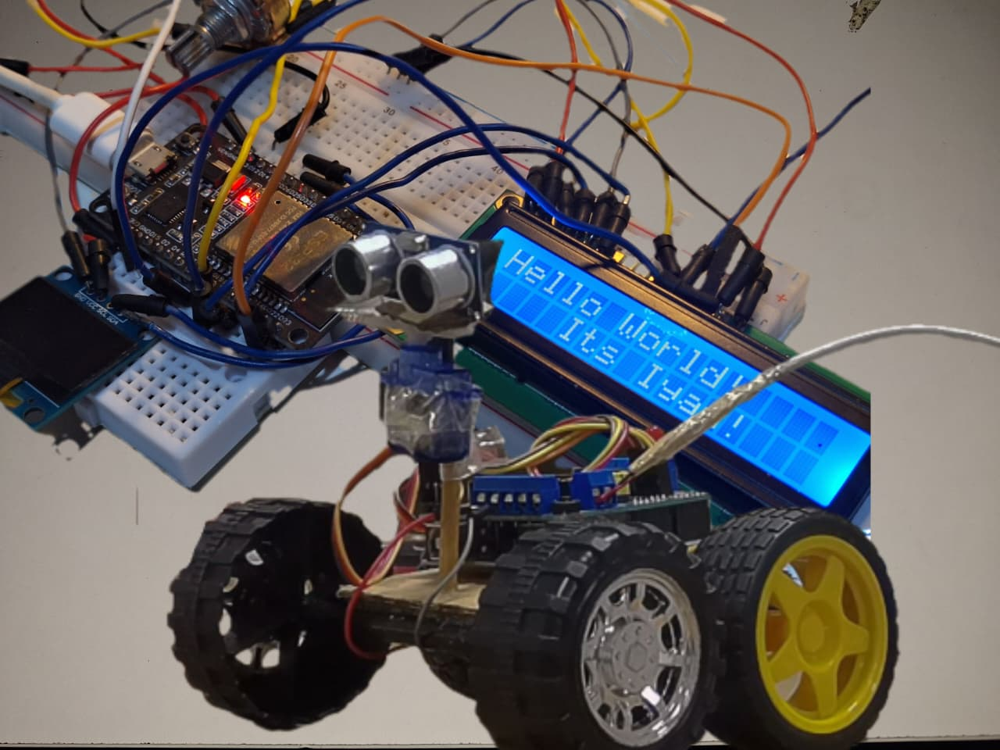

Featured Projects

University Topology Network Design
Comprehensive network diagram implementing RIPv2 routing, subnetting, VLANs, L3/L2 switches, routers, DHCP servers, HTTP and FTP services for educational infrastructure.
RIPv2
VLANs
Subnetting
DHCP
Multi-VLAN Homelab Environment
Designed and configured a comprehensive homelab network with admin, IT, and guest VLANs. Deployed virtual machines and tested routing, switching, and firewall configurations.
VLANs
VMware
Firewall
Routing

IoT Prototype Network
Built IoT prototypes using Arduino and sensors (temperature, motion) with network connectivity for remote monitoring and automation. Experimented with motor drivers and robotics controllers.
Arduino
IoT
Sensors
Automation
Network Traffic Analysis
Captured and analyzed real-time network traffic using Wireshark to identify protocols, ARP requests, and HTTP communications. Investigated anomalies for cybersecurity insights.
Wireshark
Packet Analysis
Cybersecurity
Protocols